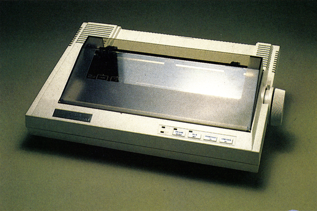
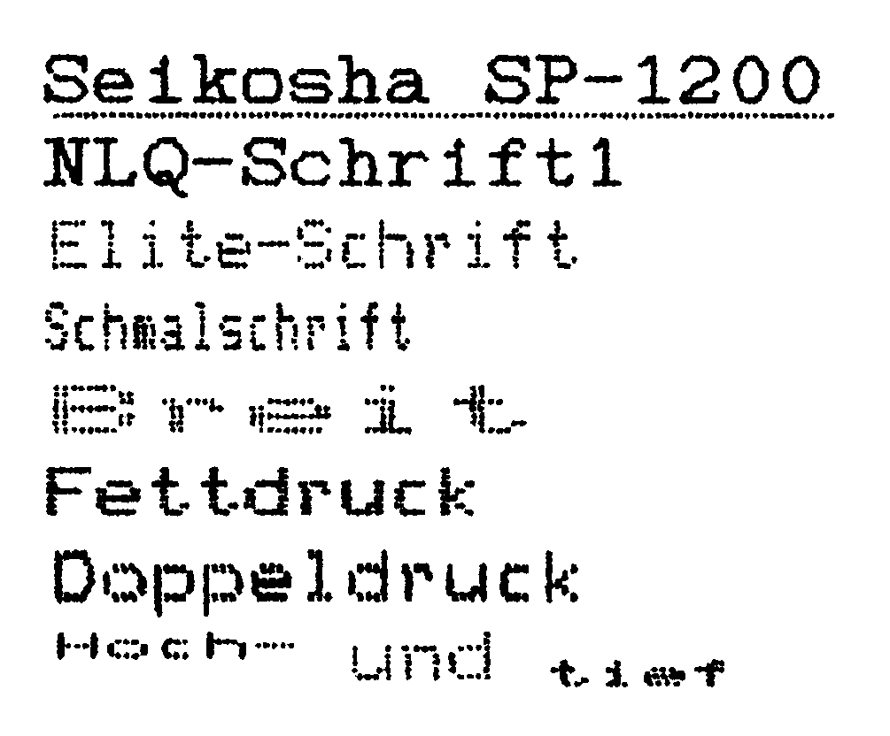

Preisgünstiger Schönschreiber
Mit dem neuen SP-1200 bringt Seikosha schon den zweiten NLQ-Drucker unter 1000 Mark in Jahresfrist auf den Markt. Was darf man von ihm erwarten?
Bereits mit dem SP-180VC hat Seikosha gezeigt, daß man gute NLQ-Drucker auch für unter 1000 Mark bauen kann (Test in der Ausgabe 10/86). Der brandneue SP-1200 (Bild 1) will, mit einem Preis von 799 Mark, diese Serie fortsetzen. Dabei ist das Leistungsniveau des SP-1200 etwas über dem SP-180VC angesiedelt. Diesen Unterschied sieht man nicht nur an Hand der Druckleistungen, sondern bereits äußerlich. Gegenüber dem Vorgängermodell, dem SP-1000, haben die Entwickler dem Drucker ein wesentlich moderneres, etwas kantiges Aussehen gegeben. Die wichtigsten Funktionselemente sind dabei allerdings die gleichen geblieben. So befindet sich der Knopf zum Eindrehen des Papiers, zusammen mit dem Hebel für den halbautomatischen Papiereinzug, wie gewohnt auf der rechten Gehäuseseite. Der Traktor ist leider wieder ein Zugtraktor, der zwar billiger zu bauen, aber leider auch wesentlich unhandlicher ist. Für alle, die nicht gerne nach den DIL-Schaltern suchen, hat man daran gedacht, diese gut erreichbar an der Gehäuserückseite anzubringen. An der Gehäusevorderseite findet man vier Tasten (Online, NLQ, Form- und Linefeed), mit denen man, neben den Standardfunktionen wie Zeilen- und Seitenvorschub, auch die NLQ-Schrift und linken beziehungsweise rechten Rand einstellen kann. Das Papier wird beim SP-1200 ausschließlich von hinten herangeführt, eine Zuführung von der Gehäuseunterseite ist nicht vorgesehen. Das Einlegen der Farbbandkassette (24,50 Mark) ist wie beim Vorgängermodell (gleicher Kassettentyp) problemlos möglich. Beim Einlegen des Farbbandes kann man sich einen Blick in die Druckmechanik des SP-1200 gönnen. Dabei wird man feststellen, daß der etwas zierliche Druckkopf auf zwei soliden Schienen gelagert ist, die exakte Führung und ein langes Leben der Mechanik erwarten lassen.

Versionsvielfalt
Zum Test stand uns die »AI«-Version, die sowohl Epson- als auch IBM-kompatibel ist (mit ESC/P-Befehl oder über DIP-Schalter erreichbar), zur Verfügung. Zum Anschluß an den C 64 oder C 128 benötigt man eines der inzwischen reichhaltig angebotenen Centronics-Interfaces, wie beispielsweise der Wiesemann Typ 92000 G, oder ein Software-Interface. Nach Auskunft von Seikosha soll der SP-1200 aber auch in mehreren anderen Versionen, vor allem aber in einer »VC«-Version zum direkten Anschluß an den C 64 oder C 128, gebaut werden. In der getesteten »AI«-Version kennt der SP-1200 alle Befehle der ESC/P-Norm und die eines IBM-Grafikdruckers. Der Zeichensatz des C 64/C 128 wird erst in der angekündigten »VC«-Version vorhanden sein. Dank dieser Befehlsvielfalt ist es für den SP-1200 kein Problem, schriftenreiche Texte zu drucken beziehungsweise Grafiken mit den verschiedensten Programmen, wenn ein Epson-Drucker unterstützt wird, aufs Papier zu bringen. Dabei ist der SP-1200 gar nicht so langsam. Texte in Normaldruck schafft er mit einer Geschwindigkeit von 120 Zeichen pro Sekunde (gemessen 96 Zeichen/s). In der NLQ-Schrift sind es immerhin noch 25 Zeichen/s (gemessen 24 Zeichen/s). Für den Probetext benötigte der SP-1200 2:20 Minuten und liegt damit im guten Mittelfeld der Drucker dieser Preisklasse.
| Name des Druckers: | Seikosha SP-1200 AI | Empfohlener Preis: | 799 Mark |
|---|---|---|---|
| Abmessungen (B x H x T): | 417 x 291 x 118 mm | Farbband-Preis: | S/W: 24 Mark |
| Druckkopf: | 9 Nadeln | Gewicht: | 5,1 Kilogramm |
| Zeichenmatrix (H x B) | k.A. | NLQ-Matrix: | k.A. |
| Papierarten: | Einzel, Endlos | Zeichensätze: | ASCII + IBM + Internationale |
| Papierformate: | Einzel, maximal 254 mm Endlos, maximal 254 mm |
Durchschläge: | bis zu 2 |
| Zeichen/Zeile: | Bis zu 132 | Selbsttest: | Ja |
| Hexdump: | Ja | halbautom. Einzelblatt: | Ja |
| Pufferspeicher: | 2,3 KByte, optional bis 8 KByte | Rückwärtstransp.: | Nein |
| Geschwindigkeit angegeben PICA Draft-Qualität: | 120 Zeichen/s | NLQ-Schrift: | 25 Zeichen/s |
| Geschwindigkeit Praxistest: | 96 Zeichen/s | NLQ-Schrift Praxistest: | 24 Zeichen/s |
| Ladbar. Zeichensatz: | Ja | Probetext: | 2:20 Minuten |
| Grafikmodi: | 480 bis 1920 Punkte | ||
| Schriftarten: | Pica, Elite, Schmal, Breit, Doppel, Fett, Hoch, Tief, Unterstreichen, Proportional, Italic, NLQ-Schrift | ||
| Funktionstasten: | Online/Formfeed/Linefeed mit Doppelbelegung | ||
| Ausstattung: | deutsches Handbuch, Papierseparator | ||
| Besond. Funktionen: | Modelle für Commodore, Atari, Schneider erhältlich | ||
| Sonderzubehör: | Automatischer Einzelblatteinzug | ||
Werturteil
Mit seinen umfangreichen Steuerbefehlen (Tabelle) und einer sehenswerten NLQ-Schrift (Bild 2 und 3) ist der SP-1200 ein Drucker, der auch in der Preisklasse über 1000 Mark angesiedelt sein könnte.

Erfreulicherweise bescheidet er sich aber mit 799 Mark und besitzt damit ein ausgezeichnetes Preis-Leistungsverhältnis. Einziger und maßgeblicher Kritikpunkt ist die Papierzuführung mit Zugtraktor, die für einen Drucker heute nicht mehr zeitgemäß ist. Zusammen stellt der SP-1200 ein ehrliches Leistungspaket zum erfreulichen Preis dar.
(aw)Info: Seikosha (Europe), Bramfelder Chausse 106, 2000 Hamburg 71, 040/646002-0